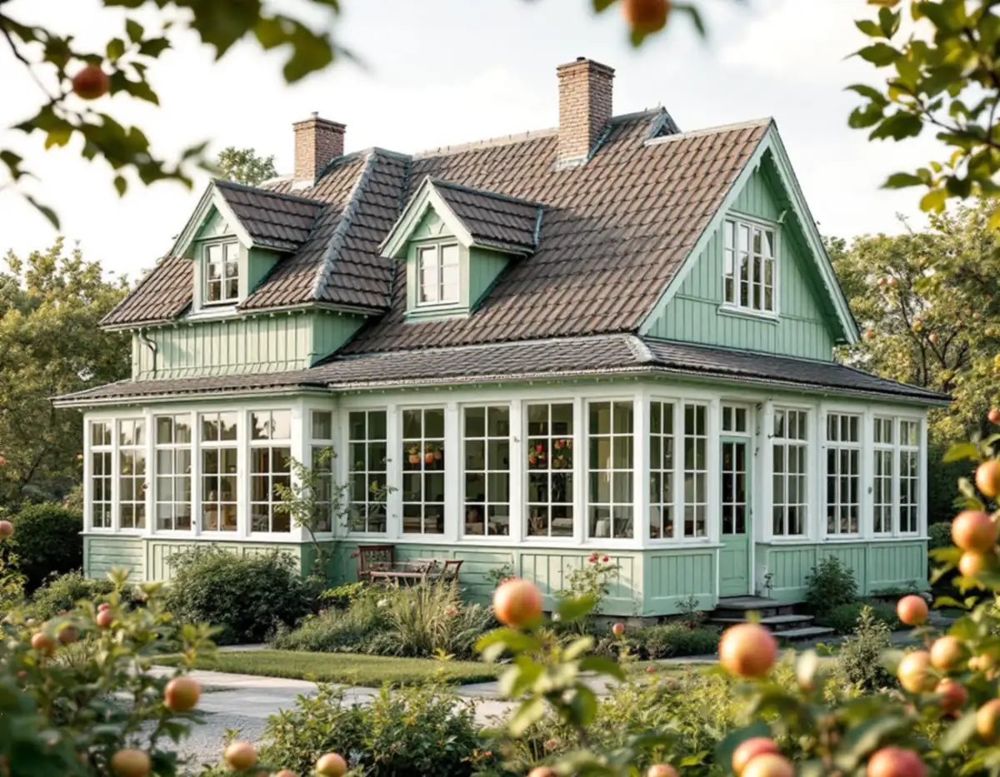
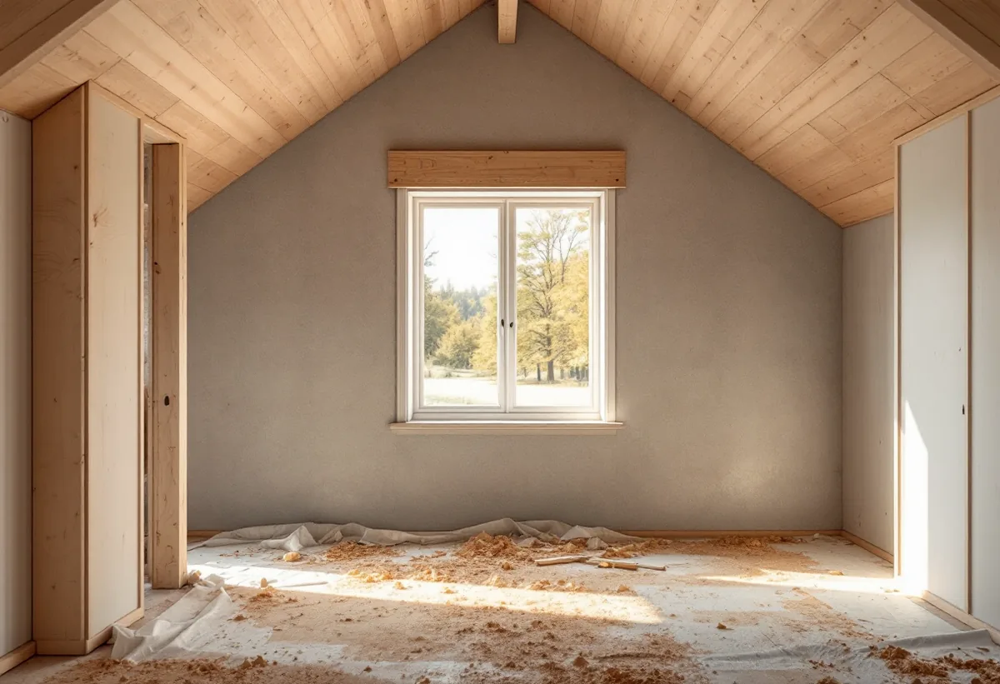
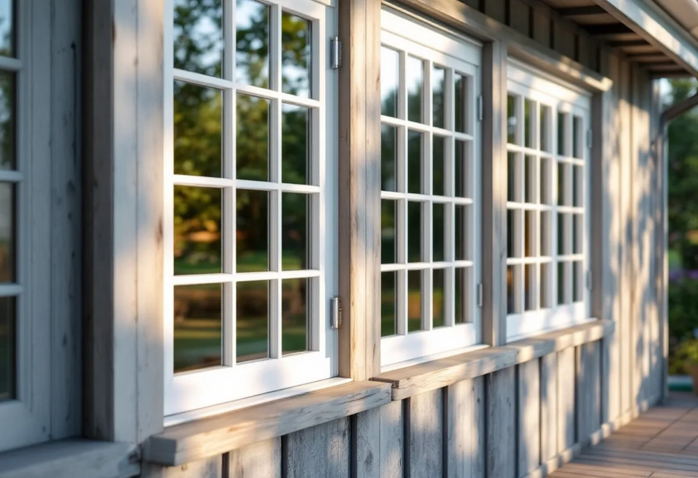

Platsbesök
Gratis besök där vi mäter fönstren och ser på väggarna.

Spångas villastäder består av individuellt utformade hus från olika tider, ofta med glasverandor och kupor.
Beskriv jobbet kort.
Något blev fel. Kontrollera uppgifterna eller ring 08 12 410 276.
Vi tittar på jobbet på plats innan du får offert.
Du ser vad som ingår och vad det kostar.
Vi drar av ROT direkt och sköter ansökan.
Geal Entreprenad AB, Bromma. Org.nr 559303-7566.

Ett fönsterbyte där kan vara att ersätta gamla fönster, men också att ta upp ett nytt. Geal Entreprenad AB byter och sätter in fönster i villor i Solhem, Bromsten, Flysta och Sundby och ser till att konstruktionen och grannarna är med i planeringen.
Stadens vägledning Varsam utveckling av småhus- och villaområden beskriver hur villastäderna var privat organiserade, vilket gav en brokigare bebyggelse än i stadens egnahemsområden. Trä var det dominerande fasadmaterialet, och glasverandor, takkupor och snickarglädje gav stadsdelarna en variation som är tydlig än i dag. I tabellen är Solhem markerat som kulturhistoriskt värdefull miljö, medan Bromsten, Flysta och Sundby saknar sådan markering.
Stadsmuseets inventering av Älvsjö villastad nämner att fastighetsbolaget AB Hem på landet hade anlagt Solhem innan bolaget började sälja tomter i Älvsjö 1908. Stadens områdesfakta för 2025 räknar 1 946 småhus med äganderätt i Solhem och 916 i Bromsten.

Boverket skriver att det inte krävs bygglov för att ta upp en ny öppning för ett fönster eller en dörr i ett småhus, och inte heller någon anmälan, så länge du inte gör något som påverkar konstruktionen av byggnadens bärande delar väsentligt. Ändringen ska ändå anpassas till omgivningen och vara varsam mot byggnaden, och ibland krävs bygglov ändå, till exempel nära eller inom särskilt värdefulla byggnader och områden.
Stockholms stad påminner om att nya fönster kan ge ökad insyn som blir en olägenhet för grannarna, och att nya öppningar kan påverka den bärande konstruktionen så att den behöver förstärkas. Vi ser därför på väggen innan vi lovar något. Behövs en förstärkning ritas den, och påverkas bärande delar väsentligt görs en anmälan.
En glasveranda har ofta fler och mindre rutor än huset i övrigt, och fönstren är en stor del av dess uttryck. Byts de mot fönster med annan indelning ändras verandans karaktär mer än när ett enstaka fönster byts på fasaden. På stadens lista över ändringar av fönster står just att lägga till spröjs eller ta bort en mittpost.
Vi mäter verandans fönster och föreslår nya med samma indelning, eller renovering där det går. För villor i Solhem, som är kulturhistoriskt värdefull miljö, kontrollerar vi kartan innan vi beställer. Mer om att renovera befintliga fönster finns under fönsterrenovering i Spånga.
Vägledningen beskriver villastäderna som områden med en mångfald av hustyper från olika epoker, där utbyggnadsfaserna och den successiva kompletteringen speglas i bebyggelsen. Den råder att karaktärsskapande material, kulörer, byggnadsdelar och detaljer tas tillvara eller återskapas i så stor utsträckning som möjligt vid ombyggnader och renoveringar.
För fönsterbytet betyder det att vi utgår från husets egen tid. En villa från 1910-talet och en från 1970-talet på samma gata behöver olika fönster, och båda kan bli rätt. Vi tittar på fönstrens proportioner, bågarnas antal och hur de öppnas, och på hur fodren är profilerade, innan vi föreslår något nytt. Mer om tjänsten finns under fönsterbyte.
Gratis besök där vi mäter fönstren och ser på väggarna.
Vi kontrollerar Stadsmuseets klassning för huset.
Förstärkning ritas när en ny öppning tas upp.
Fönster efter husets tid och indelning.
Byte eller ny öppning, drevning och tätning.
Foder, bleck och genomgång med dig.
I ett småhus räknar Skatteverket det som rotarbete att reparera eller byta ut fönster, att montera bullerglas och isolerglas och att byta fönsterbleck. Är bostaden yngre än fem år får arbetet bara återställa det ursprungliga skicket, och nytt material ska vara likvärdigt med det gamla.
Avdraget är högst 30 procent av arbetskostnaden och högst 50 000 kronor per person och år. Material och resor ger inget avdrag, och Geal drar avdraget direkt på fakturan.
Antal och storlek på fönstren, om en ny öppning tas upp och behöver förstärkas, verandans fönster, indelning och glas, foder och bleck. Efter ett gratis platsbesök får du ett skriftligt kostnadsförslag.
Byta eller renovera fönster.
Fönsterbyte i Stockholm →Takbyte, takbesiktning och plåtarbeten.
Takläggare i Spånga →Solhem, Bromsten, Flysta och Sundby.
Takrenovering i Spånga →Solhem, spåren och de stora tomterna.
Attefallshus i Spånga →Äldre villor, duschplats och bostadsanpassning.
Badrumsrenovering i Spånga →Riva och bygga nytt hus.
Byggföretag i Spånga →Bättra eller måla om hela villan.
Fasadmålning i Spånga →Trävillor och gruppbyggda radhus.
Fasadrenovering i Spånga →Villorna i Solhem.
Fönsterrenovering i Spånga →Massivt, lamell, fanér eller laminat.
Golvläggare i Spånga →Breda originalgolv och patina.
Golvslipning i Spånga →Solhem, villastäder och kök i flera lager.
Köksrenovering i Spånga →Solhems färgskala och villorna kring stationen.
Målare i Spånga →Villatak, rännor och stuprör.
Plåtslagare i Spånga →Väggar, vindar och verandor i villastäderna.
Snickare i Spånga →Solceller, radarn och Solhem.
Takbyte i Spånga →Tapet som passar husets tid.
Tapetsering i Spånga →Villastäderna, tomterna och gatan.
Tillbyggnad i Spånga →Villastäderna, stommen och ventilationen.
Totalrenovering i Spånga →Eller ring 08 12 410 276, mån–fre 08–17.
Beskriv jobbet kort.
Något blev fel. Kontrollera uppgifterna eller ring 08 12 410 276.